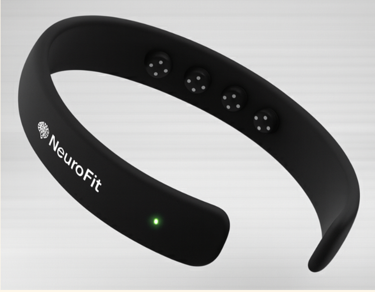
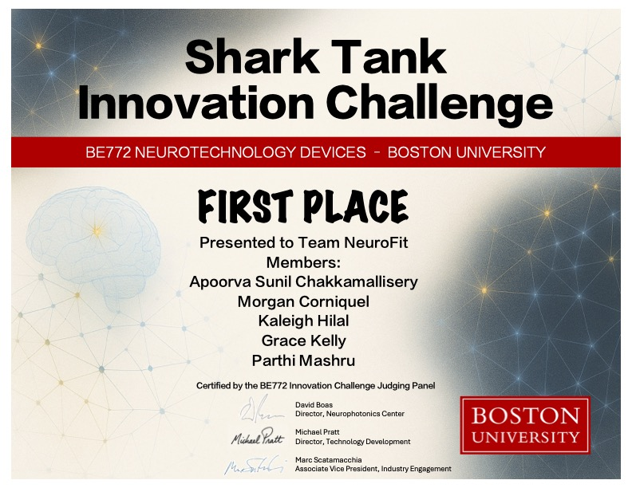

Current EEG wearables focus on wellness and fail in high-motion environments like weightlifting, leaving athletes without reliable insight into focus and recovery.
NeuroFit is a motion-tolerant EEG wearable designed for strength athletes, enabling real-time focus tracking and recovery insights through on-device signal processing and multimodal data integration.


Developed in Fall 2025, NeuroFit explores wearable neurotechnology beyond wellness into athletic performance. The system combines EEG with motion correction (IMU-based) and on-device AI processing to deliver reliable brain data during training.
Motion artifact correction, real-time focus tracking, EEG-based sleep staging, and integration with Apple Watch, Garmin, and Oura for a complete recovery dashboard.
Positioned as a new category in fitness technology, NeuroFit won 1st place in both rounds of a Shark Tank–style pitch, validating both technical feasibility and product-market potential.
Designed with a consumer wellness positioning to avoid FDA/CE regulatory burden while delivering meaningful performance insights, supported by scalable business and integration strategy.